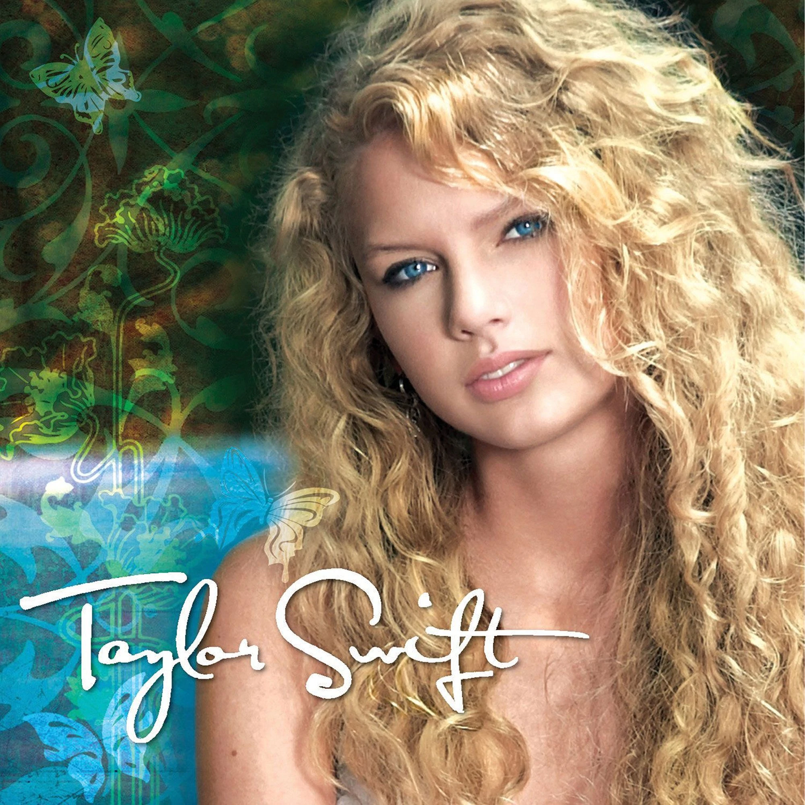
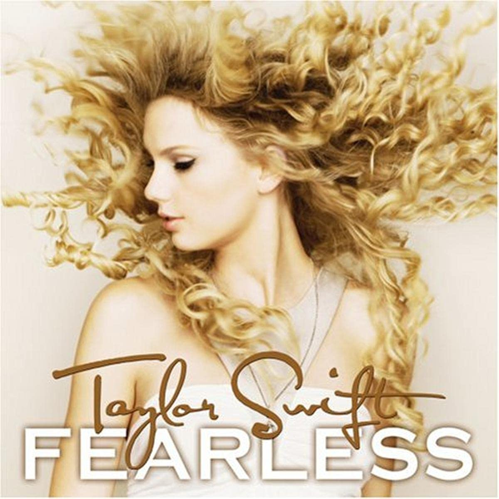
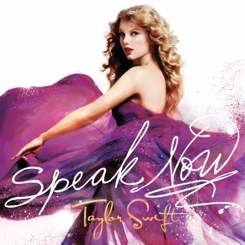
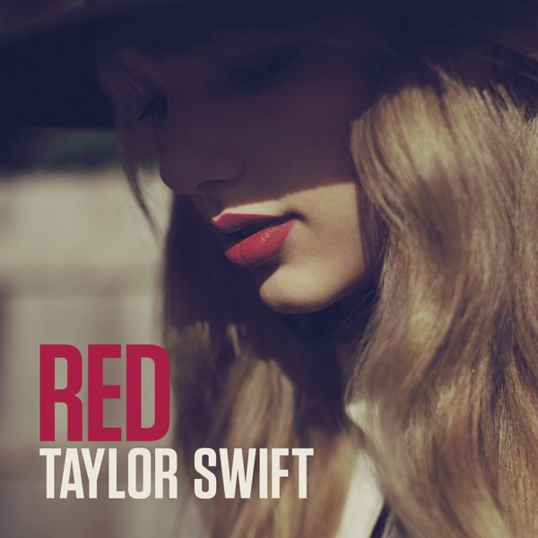
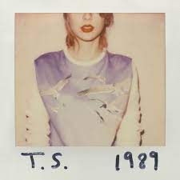
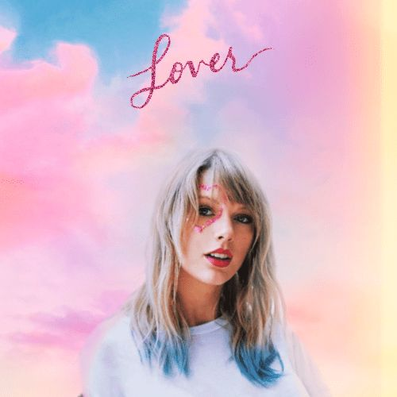
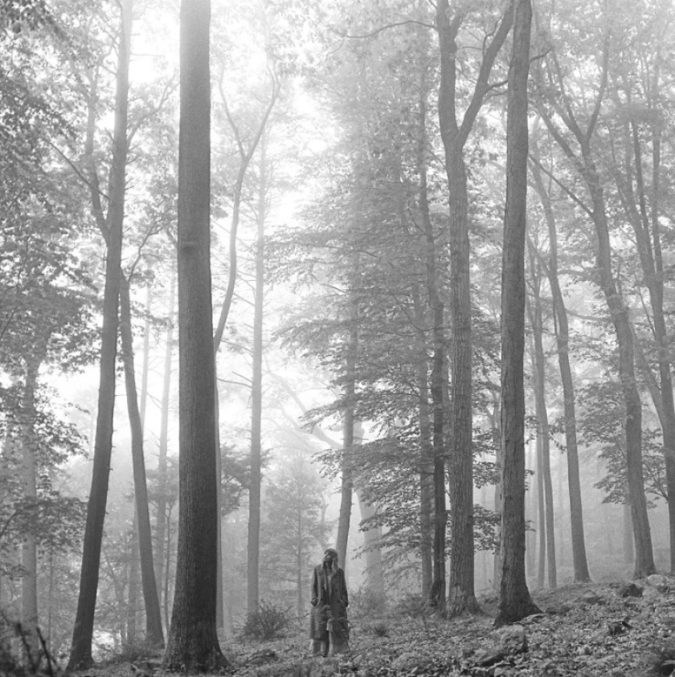

Taylor Alison Swift es una cantautora, productora, actriz, directora, diseñadora y empresaria estadounidense. Criada en Wyomissing, se mudó a Nashville a los 14 años para realizar una carrera de música country.
DISCOGRAFIA

Taylor Swift -2006
Taylor Swift es el primer álbum de estudio homónimo de la cantante y compositora de pop y country Taylor Swift.

Fearless -2008
Fearless es el segundo álbum de estudio de Taylor Swift. El álbum fue lanzado el 11 de noviembre de 2008 por Big Machine Records. Al igual que con su primer álbum, Taylor Swift, Swift escribió o coescribió las trece canciones de Fearless.

Speak Now -2012
Speak Now debutó en el puesto número uno en la lista de Billboard 200 de EE.UU., otorgándole a Swift su segundo mayor número consecutivo en la lista de ventas en EE. UU. un álbum country

Red -2012
El álbum presenta colaboraciones con productores y artistas invitados como Gary Lightbody de la banda Snow Patrol y Ed Sheeran, y se destaca por la experimentación de Swift con nuevos géneros musicales.

1989 -2014
El álbum representa una salida de la música country de los álbumes anteriores de Swift, y es descrito por la cantante como su "primer álbum oficial de pop documentado"

Reputation -2017
Reputation recibió críticas generalmente positivas de críticos de música y alcanzó el número uno en 13 países, incluido el Reino Unido y Estados Unidos.

Lover -2019
Lover es principalmente un álbum pop, synth-pop, electro pop y pop rock con un estilo retro, que abarca diversos géneros como country, funk, dream pop, folk, rock and roll, R&B, bubblegum pop, pop punk e indie pop. Definido por Swift como "una carta de amor para amarse a sí mismo", Lover celebra todo el espectro del amor

Folklore -2020
Folklore (estilizado en minúsculas) es el octavo álbum de estudio de Taylor Swift. Fue un álbum sorpresa, lanzado a través de Republic Records el 24 de julio de 2020, once meses después de su predecesor.

Evermore -2020
Lanzado el 11 de diciembre de 2020, menos de cinco meses después del álbum Folklore de Swift, Evermore es un "disco hermano" de su predecesor, y ambos son álbumes sorpresa anunciados en las redes sociales horas antes del lanzamiento.